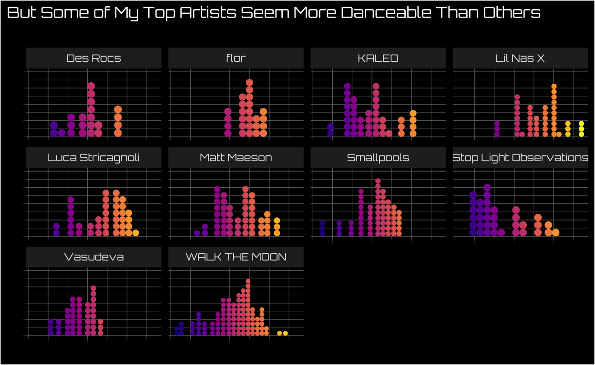

Get Your Spotify Data in 10 Minutes or Less
My previous post working with Spotify data required requesting the data from Spotify and waiting. Patience is a virtue in a lot of situations, and this isn’t one of them.
Here’s a post on using the Spotify API via R to access to your data right away, figuring out your all-time top artists, and learning more about the artists you’ve spent the most time with on your Spotify journey.
Load Packages
Get the Spotify Access Token
To get access to Spotify via R I highly recommend installing the spotifyr package. They also have excellent instructions at that link for the other steps you need to take outside of R to connect to the Spotify API.
There are only three bits I would add:
1. Once you have an app set up inside your Spotify developers account make sure you click on “Users and Access,” add your Spotify account, and save that you added yourself as a “user.” Otherwise you won’t be able to access your own data.
2. If you’re using version control like Github set your client id and client secret separate from any files you push to a public repository1
3. Use “get_spotify_authorization_code()” rather than “get_spotify_access_token()” if you’re looking to get access to your own data2
access_token <- get_spotify_authorization_code()
Get My Top 10 Artists
Just like in my last post, I wanted to figure out things that aren’t touched on by Spotify Wrapped at the end of each year. And while they touched on our most listened artists of the decade back in 2019, the world has changed a teensy bit since then. I figured I’d check in on my top artists as of right now, and the results are here for y’all to roast.
Show code
top_artists <- get_my_top_artists_or_tracks(type = 'artists', time_range = 'long_term', limit = 10) %>%
select(Artist = name) %>%
mutate(`All-Time Listened Rank` = 1:10)
gt(top_artists)
| Artist | All-Time Listened Rank |
|---|---|
| Luca Stricagnoli | 1 |
| Vasudeva | 2 |
| Lil Nas X | 3 |
| Des Rocs | 4 |
| KALEO | 5 |
| flor | 6 |
| Matt Maeson | 7 |
| WALK THE MOON | 8 |
| Smallpools | 9 |
| Stop Light Observations | 10 |
Get Audio Features From My Top Artists
But I’m not satisfied with just knowing who my top artists are. I want to know what they’ve been up to. Luckily, Spotify’s API (unlike the streaming history data you can request) also gives songs scores on fun metrics like danceability and instrumentalness. I wrote a function3 to get those metrics for all the tracks my top artists have on Spotify.
Heads up if you’re doing something similar yourself: You may want to use the artist ID rather than counting on the artist name to translate properly. Here’s a quick tutorial on how to find any given artist’s id
My first attempt at creating this data frame had “Florida Georgia Line” instead of “flor.” I think folks should listen to whatever makes them happy, and a “Top Artists” data frame with Florida Georgia Line wouldn’t be an accurate reflection of what I’ve been listening to most!
Show code
# Get the features I want once (Good practice before you try to write a function)
luca <- get_artist_audio_features('Luca Stricagnoli') %>%
select(artist_name, track_name, album_name, key_mode, album_release_year, c(danceability:tempo))
# Map through all top artists to get all the features for my top ten artists by listening time
# First get a list of artists to map through we can use
top_ten_artists <- top_artists %>%
select(Artist) %>%
mutate(Artist = case_when(
Artist == "flor" ~ "0szWPxzzE8DVEfXFRCLBUb", # Got Artist ID from this resource https://streamingcharts.com.au/2018/04/find-spotify-id/
TRUE ~ Artist
)) %>% ## If I don't do this I end up with Florida Georgia Line instead of flor in the data frame
deframe()
# Then map through all of them (perform the function for each artist) and put the results into a data frame
top_ten_df <- map_dfr(top_ten_artists, ~{
get_artist_audio_features(.x) %>%
select(artist_name, track_name, album_name, key_mode, album_release_year, c(danceability:tempo))
})
Skim the Data
I nearly always use the “skim” function from the skimr package on any new data frame I’ve created. The function gives me a lot of information at once and helps me find implausible values/distributions much more quickly than other tools I’ve tried.4
| skim_type | skim_variable | n_missing | complete_rate | character.min | character.max | character.empty | character.n_unique | character.whitespace | numeric.mean | numeric.sd | numeric.p0 | numeric.p25 | numeric.p50 | numeric.p75 | numeric.p100 | numeric.hist |
|---|---|---|---|---|---|---|---|---|---|---|---|---|---|---|---|---|
| character | artist_name | 0 | 1 | 4 | 23 | 0 | 10 | 0 | NA | NA | NA | NA | NA | NA | NA | NA |
| character | track_name | 0 | 1 | 2 | 81 | 0 | 344 | 0 | NA | NA | NA | NA | NA | NA | NA | NA |
| character | album_name | 0 | 1 | 3 | 38 | 0 | 32 | 0 | NA | NA | NA | NA | NA | NA | NA | NA |
| character | key_mode | 0 | 1 | 7 | 8 | 0 | 24 | 0 | NA | NA | NA | NA | NA | NA | NA | NA |
| numeric | album_release_year | 0 | 1 | NA | NA | NA | NA | NA | 2017.09287257 | 3.07588247 | 2.0120e+03 | 2015.00000 | 2.0170e+03 | 2020.00000 | 2021.000 | ▅▅▆▃▇ |
| numeric | danceability | 0 | 1 | NA | NA | NA | NA | NA | 0.53025918 | 0.14594262 | 1.5000e-01 | 0.42100 | 5.4000e-01 | 0.62900 | 0.929 | ▂▅▇▅▁ |
| numeric | energy | 0 | 1 | NA | NA | NA | NA | NA | 0.68012505 | 0.20302010 | 8.0900e-02 | 0.53450 | 7.1900e-01 | 0.84900 | 0.979 | ▁▂▅▆▇ |
| numeric | key | 0 | 1 | NA | NA | NA | NA | NA | 5.12742981 | 3.80859180 | 0.0000e+00 | 1.00000 | 5.0000e+00 | 9.00000 | 11.000 | ▇▂▂▃▆ |
| numeric | loudness | 0 | 1 | NA | NA | NA | NA | NA | -6.68563283 | 2.69306783 | -2.1142e+01 | -7.77900 | -6.2370e+00 | -4.86800 | -1.830 | ▁▁▂▇▆ |
| numeric | mode | 0 | 1 | NA | NA | NA | NA | NA | 0.66090713 | 0.47391347 | 0.0000e+00 | 0.00000 | 1.0000e+00 | 1.00000 | 1.000 | ▅▁▁▁▇ |
| numeric | speechiness | 0 | 1 | NA | NA | NA | NA | NA | 0.06710216 | 0.07273348 | 2.4300e-02 | 0.03500 | 4.3700e-02 | 0.06220 | 0.626 | ▇▁▁▁▁ |
| numeric | acousticness | 0 | 1 | NA | NA | NA | NA | NA | 0.19288242 | 0.28305396 | 4.1100e-05 | 0.00327 | 4.0200e-02 | 0.28100 | 0.965 | ▇▁▁▁▁ |
| numeric | instrumentalness | 0 | 1 | NA | NA | NA | NA | NA | 0.17228654 | 0.33253072 | 0.0000e+00 | 0.00000 | 5.7600e-05 | 0.03145 | 0.978 | ▇▁▁▁▂ |
| numeric | liveness | 0 | 1 | NA | NA | NA | NA | NA | 0.20885292 | 0.18722280 | 3.5300e-02 | 0.09745 | 1.2500e-01 | 0.26600 | 0.994 | ▇▂▁▁▁ |
| numeric | valence | 0 | 1 | NA | NA | NA | NA | NA | 0.42571685 | 0.21165053 | 3.9100e-02 | 0.26900 | 4.0000e-01 | 0.56950 | 0.964 | ▅▇▆▃▂ |
| numeric | tempo | 0 | 1 | NA | NA | NA | NA | NA | 128.14024406 | 27.23182764 | 6.0008e+01 | 109.67000 | 1.2704e+02 | 146.16800 | 196.739 | ▁▅▇▃▂ |
Visualize Danceability of My Top Artists’ Tracks
I wanted to get a sense of how danceable my top artists are overall. This approximatey normally distributed distribution means my top artists have some range when it comes to danceability, and most of their songs are close to the “middle of the road” on the metric.
Show code
font_add_google(name = "Orbitron",
family = "orbitron")
showtext::showtext_auto()
top_ten_df %>%
ggplot(aes(danceability, color = danceability, fill = danceability)) +
geom_dots() +
scale_color_viridis_c(option = "plasma") +
scale_fill_viridis_c(option = "plasma") +
theme_dark() +
labs(x = "Danceability",
y = "",
title = "My Top Artists' Tracks Have A Wide Range of Danceability",
subtitle = ""
) +
theme(plot.background = element_rect(fill = "black"),
legend.position = "none",
text = element_text(family = "orbitron", color = "white", size = 11),
panel.background = element_rect(fill = "black"),
axis.text = element_text(color = "white"),
axis.text.x = element_text(angle = 25),
axis.text.y = element_blank(),
plot.title.position = "plot")

Visualize Danceability Separately By Each of My Top Artists
However, when I break down danceability by artist we see some artists are likely more danceable than others. I’m not doing a formal test here, and I’m also not surprised that Lil Nas X seems way more danceable than Vasudeva5.
Show code
top_ten_df %>%
ggplot(aes(danceability, color = danceability, fill = danceability)) +
geom_dots() +
scale_color_viridis_c(option = "plasma") +
scale_fill_viridis_c(option = "plasma") +
theme_dark() +
labs(x = "",
y = "",
title = "But Some of My Top Artists Seem More Danceable Than Others",
subtitle = ""
) +
theme(plot.background = element_rect(fill = "black"),
legend.position = "none",
text = element_text(family = "orbitron", color = "white", size = 10),
panel.background = element_rect(fill = "black"),
axis.text = element_text(color = "white"),
axis.text.x = element_blank(),
axis.text.y = element_blank(),
plot.title.position = "plot") +
facet_wrap(~artist_name)

A Traditional Scatter Plot Doesn’t Help Us Much When One Variable Is Skewed
I know at least some of my top artists are heavily instrumental, and I was curious how that related to danceability. Since both outcomes are continuous, the canonical plot to do is a scatter plot. I added a regression line predicting instrumentalness using danceability6 but this plot still isn’t as helpful as I’d like it to be.
One reason for this is that instrumentalness is an incredibly skewed variable among my top artists. Some of their tracks have very high instrumentalness scores, while a vast majority have scores either at or near 0. We could try transforming instrumentalness to reduce skew, and that makes substantive interpretation a bit trickier.7
Show code
top_ten_df %>%
ggplot(aes(danceability, instrumentalness, color = danceability)) +
scale_color_viridis_c(option = "plasma") +
geom_jitter() +
geom_smooth(method = "lm", formula = "y~x") +
theme_dark() +
labs(x = "Danceability",
y = "Instrumentalness",
title = "This Plot Isn't Helping Us Understand the Association\nBetween Danceability & Instrumentalness Much",
subtitle = "Instrumentalness is Skewed With Lots of Values Near 0"
) +
theme(plot.background = element_rect(fill = "black"),
legend.position = "none",
text = element_text(family = "orbitron", color = "white", size = 13),
panel.background = element_rect(fill = "black"),
axis.text = element_text(color = "white"),
axis.text.x = element_text(angle = 25),
axis.text.y = element_text(hjust = 1.5),
plot.title.position = "plot")

Using a Dot Plot Where the Other Variable is the Color/Fill Is One Alternative
One idea I’ve played with a bit is using a dot plot where dot placement is determined by the ~normally distributed variable and the color of the dots is determined by the more skewed variable.8 As you can see below, there are low and higher levels of instrumentalness throughout the distribution of danceability. I think this kind of plot has definite weaknesses9 and I think it can be a decent alternative to the traditional scatter plot when one variable is incredibly skewed.
Show code
top_ten_df %>%
ggplot(aes(danceability, color = instrumentalness, fill = instrumentalness)) +
geom_dots() +
scale_color_viridis_c(option = "plasma", guide = FALSE) +
scale_fill_viridis_c(option = "plasma") +
theme_dark() +
labs(x = "Danceability",
y = "",
title = "We See High and Low Levels of Instrumentalness\nThroughout Danceability Distribution",
fill = "Instrumentalness"
) +
theme(plot.background = element_rect(fill = "black"),
legend.background = element_rect(fill = "black"),
text = element_text(family = "orbitron", color = "white", size = 13),
panel.background = element_rect(fill = "black"),
axis.text = element_text(color = "white"),
axis.text.x = element_text(angle = 25),
axis.text.y = element_blank(),
plot.title.position = "plot")

Conclusion
This post demonstrated how to use the Spotify API to figure out who your top artists are and make an alternative visualization when one of the variables you care about is really skewed. I really enjoyed this process, and I know I’m only scratching the surface of what this API can do. I’m looking forward to finding out more fun ways to dig into Spotify data, and if you have any ideas please tweet them at me!
Otherwise your app’s api will be exposed which isn’t great for security purposes↩︎
Like we’ll be doing in this post!↩︎
If you’re interested in learning more about map functions in R (they’re life changing!) check out this great resource from Jenny Bryan https://jennybc.github.io/purrr-tutorial/ls01_map-name-position-shortcuts.html↩︎
I’ve exported its output as a gt table in this case, but most of the time you can just run skim() and look at the output inline. It just happens to not look as good as I’d like it to in a distill blog post↩︎
I love Vausudeva, and they’re an instrumental band I primarily listen to while I’m working↩︎
To be clear, this isn’t a causal model, we’re just seeing how much variance danceability and instrumentalness share across my top artists’ tracks↩︎
Knowing the association between danceability and the log+1 (since log of 0 is undefined) of instrumentalness is a lot trickier to translate into other knowledge that might be helpful for us↩︎
In this case instrumentalness↩︎
I’m especially concerned how it would translate at larger sample sizes↩︎